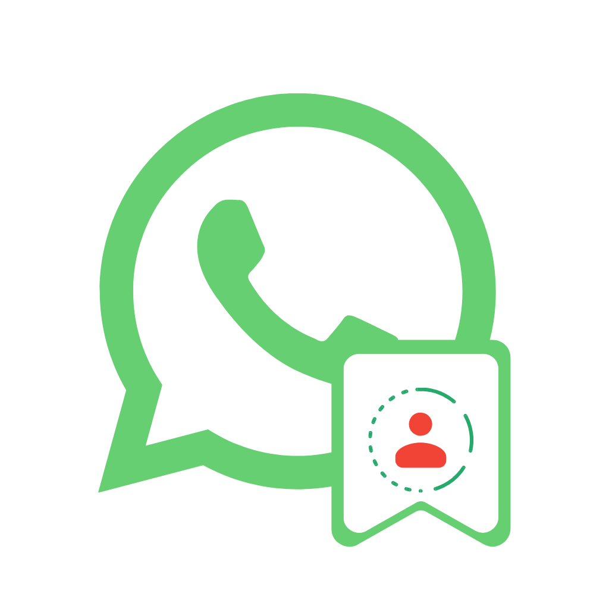

سياسة الخصوصيةPrivacy Policy
حافظ الحالات · آخر تحديث: 2 أكتوبر 2026
مقدمة
يحترم تطبيق "حافظ الحالات" خصوصيتك. توضح هذه السياسة ما يصل إليه التطبيق وكيف يستخدمه. التطبيق غير تابع لواتساب أو لشركة Meta.
البيانات التي نصل إليها
يقرأ التطبيق ملفات الحالات (صور وفيديو) المخزّنة على جهازك داخل مجلدات واتساب وواتساب الأعمال، وذلك فقط لعرضها لك داخل التطبيق.
البيانات التي لا نجمعها
لا نجمع أي بيانات شخصية، ولا نرفع أي ملف إلى الإنترنت، ولا نستخدم أدوات تتبع أو تحليلات أو إعلانات. كل شيء يبقى على جهازك.
الحفظ والمشاركة
عند الضغط على "حفظ" تُنسخ الحالة إلى مجلد Download/StatusSaver على جهازك. وعند المشاركة يُرسل الملف إلى التطبيق الذي تختاره أنت عبر قائمة المشاركة في النظام.
الأذونات
يطلب التطبيق إذن الوصول إلى الملفات لقراءة الحالات وحفظها فقط. يمكنك سحب الإذن في أي وقت من إعدادات الهاتف.
خصوصية الآخرين
الحالات ملك لأصحابها. يُرجى عدم إعادة نشرها أو مشاركتها دون إذنهم.
الأطفال
التطبيق غير موجّه للأطفال دون 13 عاماً، ولا نجمع أي بيانات منهم.
التغييرات على هذه السياسة
قد نحدّث هذه السياسة عند إضافة ميزات جديدة، وسيظهر تاريخ آخر تحديث أعلى الصفحة.
تواصل معنا
لأي سؤال عن الخصوصية راسلنا على: abdelmajid152@gmail.com
Status Saver · Last updated: October 2, 2026
Introduction
Status Saver respects your privacy. This policy explains what the app accesses and how it is used. The app is not affiliated with WhatsApp or Meta.
What we access
The app reads status files (photos and videos) stored on your device in the WhatsApp and WhatsApp Business folders, only to show them to you inside the app.
What we don’t collect
We collect no personal data, upload no files, and use no tracking, analytics or ads. Everything stays on your device.
Saving and sharing
Tapping “Save” copies the status to Download/StatusSaver on your device. Sharing sends the file only to the app you pick in the system share sheet.
Permissions
Storage access is used only to read and save statuses. You can revoke it at any time in your phone settings.
Other people’s privacy
Statuses belong to the people who posted them. Please don’t repost or share them without permission.
Children
The app is not directed at children under 13, and we collect no data from them.
Changes to this policy
We may update this policy when features change; the date at the top shows the latest version.
Contact us
For any privacy question, email us at: abdelmajid152@gmail.com